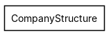
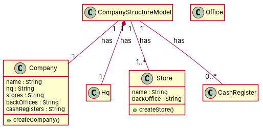

← all cases
D2/CompanyStructure — model qwen, condition B, run 1
1. Requirements (input)
R1: A company structure model has companies
R2: A company structure model has corporate HQ
R3: A company structure model has stores
R4: A company structure model has back offices
R5: A company contains one back office for each store
R6: The employees that are working in the company.
R7: A company structure model has cash registers
R8: A company is composed by one and only one corporate HQ
R9: Each corporate HQs manages a certain number of stores
R10: In a company structure model, stores have exactly one back office
R11: A store is composed by zero or more cash registers
2. Result 1 → Result 2 (ambiguity removal)
Red, struck-through: removed by ambiguity removal; green: added.
| classes (6 → 6) |
|---|
| CashRegister |
| Company |
| CompanyStructureModel |
| Hq |
| Office |
| Store |
| relations (7 → 7) |
|---|
| has: CompanyStructureModel -> CashRegister |
| has: CompanyStructureModel -> Company |
| has: CompanyStructureModel -> Hq |
| has: CompanyStructureModel -> Office |
| has: CompanyStructureModel -> Store |
| has: Company -> Office |
| has: Store -> Office |
3. Ambiguity tags
| id | req | type | cue | status | readings / explanation |
|---|
| A1 | R9 | incompleteness | certain | resolved | Each corporate HQ manages exactly one store; Each corporate HQ manages multiple stores
The phrase 'a certain number of stores' is ambiguous and could mean either exactly one or multiple stores. |
| A2 | R11 | quantifier | zero or more | resolved | A store is composed of zero cash registers; A store is composed of one or more cash registers
The phrase 'zero or more cash registers' is ambiguous and could mean either zero or one or more cash registers. |
4. Diagrams generated from the shared model
usecase diagram
class diagram
5. Code skeleton (Python; Java in code/java/)
"""Code skeleton generated from the shared model of D2/CompanyStructure.
Every class and method records the requirement(s) it traces to."""
from __future__ import annotations
import dataclasses as _dc
import enum as _enum
import typing as _t
@_dc.dataclass
class CompanyStructureModel:
"""Source: R1"""
company: _t.Optional["Company"] = None
hq: _t.Optional["Hq"] = None
stores: _t.List["Store"] = _dc.field(default_factory=list)
cashRegisters: _t.List["CashRegister"] = _dc.field(default_factory=list)
@_dc.dataclass
class Company:
"""Source: R1"""
name: _t.Optional[str] = None
hq: _t.Optional[str] = None
stores: _t.Optional[str] = None
backOffices: _t.Optional[str] = None
cashRegisters: _t.Optional[str] = None
def createCompany(self) -> None:
"""Operation."""
raise NotImplementedError
@_dc.dataclass
class Hq:
"""Source: R8, R9"""
pass
@_dc.dataclass
class Store:
"""Source: R3"""
name: _t.Optional[str] = None
backOffice: _t.Optional[str] = None
def createStore(self) -> None:
"""Operation."""
raise NotImplementedError
@_dc.dataclass
class Office:
"""Source: R4, R5, R10"""
pass
@_dc.dataclass
class CashRegister:
"""Source: R7, R11"""
pass
6. Validation, checks and traceability
| python_compiles | True |
|---|
| java_compiles | True |
|---|
| attribute_mismatches | 0 |
|---|
| method_mismatches | 0 |
|---|
| use_cases | 0 |
|---|
| use_cases_without_actor | 0 |
|---|
| use_cases_without_method | 0 |
|---|
| actors_without_use_case | 0 |
|---|
| relations_to_unknown_class | 0 |
|---|
| inconsistencies | 0 |
|---|
| inconsistency_rate | 0.0 |
|---|
| requirement_coverage | 0.8182 |
|---|
| validator fixes | |
|---|
| assumptions for open ambiguities | [{"tag": "A3", "assumption": "Requirement R4 is assumed to be satisfied through the association between CompanyStructureModel and Store, as stores are part of the company structure model."}] |
|---|
7. Scores against the reference
| element | P | R | F1 | TP/FP/FN |
|---|
| classes | 0.5 | 0.429 | 0.462 | 3/3/4 |
| attributes | 0.0 | 0.0 | 0.0 | 0/7/0 |
| relations | 0.0 | 0.0 | 0.0 | 0/4/7 |
| relations_strict | 0.0 | 0.0 | 0.0 | 0/4/7 |